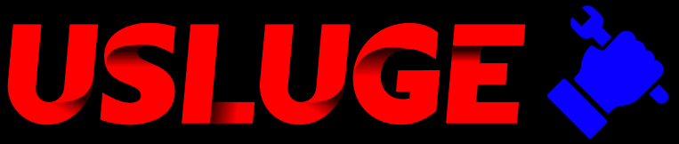
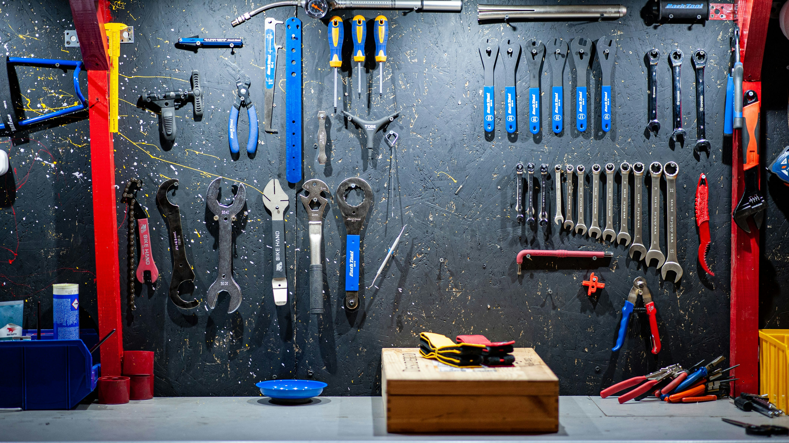
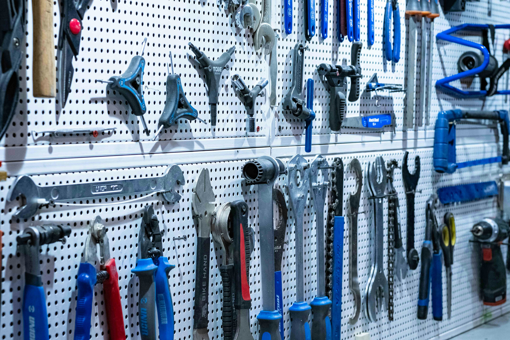

Naša misija je da pružimo sveobuhvatne i pouzdane usluge održavanja i popravki za vaše vozilo, kako biste mogli da uživate u bezbednoj i udobnoj vožnji.


Naš spektar usluga obuhvata:
1. Redovno održavanje:
- Zamena ulja i filtera
- Provera i podešavanje sistema za upravljanje i oslanjanje
- Inspekcija kočnica i zamena kočionih pločica
2. Popravke mehaničkih sistema:
- Popravke motora
- Zamena i podešavanje kvačila
- Rešavanje problema sa prenosom snage
3. Popravke električnih sistema:
- Dijagnostika i popravka električnih kvarova
- Zamena akumulatora i alternatora
- Popravka sistema za osvetljenje
4. Dijagnostika kvarova:
- Korišćenje najnovije dijagnostičke opreme za identifikaciju problema
- Precizna analiza i rešenje svih vrsta kvarova
5. Zamena delova:
- Kvalitetne zamenske delove po vašem izboru
- Profesionalna instalacija i podešavanje delova
Naš tim stručnih mehaničara je tu da vam pruži vrhunsku uslugu i brigu o vašem vozilu. Bez obzira na marku ili model, možete se osloniti na nas za sve vaše auto potrebe.
Kontaktirajte nas danas kako bismo vam pomogli da održite vaše vozilo u vrhunskom stanju!
AutoServisPlus - Vaš pouzdan partner na putu do sigurne vožnje!
Ukoliko vas zanimaju cene nasih usluga kliknite ovde.